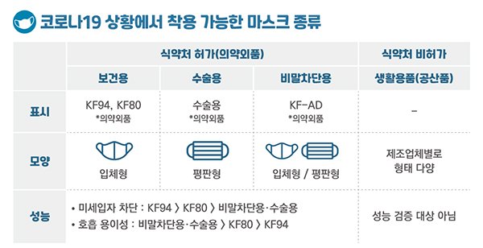
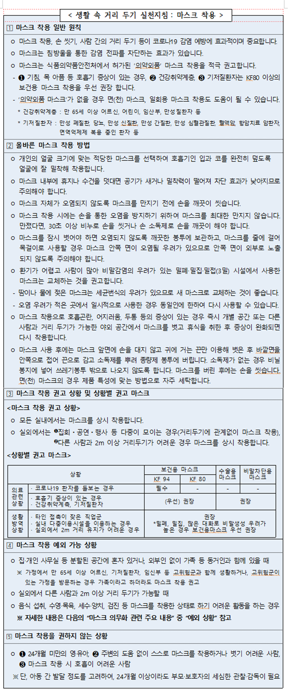
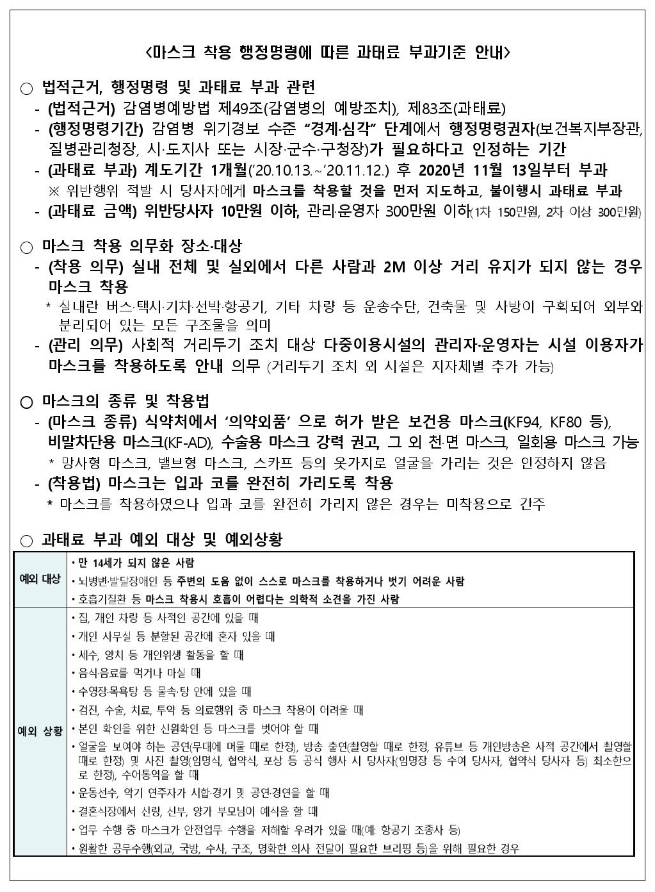

Corona Core
이용 안내
공지사항
About Us
|
통계 정보
국내 누적 확진자 통계
지역별 확진자 증가 추세
지역별 확진자 비교 통계
특정 수치 초과일 조회
지역별 확진자 숫자 조회
|
방역 정보
코로나 19
코로나 백신
확진자 동선
예방 행동 수칙
|
정부 정책
사회적 거리두기 정책
지역별 거리두기 단계
마스크 착용 의무화 범위
정부정책 > 마스크 착용
마스크 사용 안내
마스크 종류
- 클릭 시 이미지가 확대됩니다 -

마스크 착용 범위와 정책
- 클릭 시 박스가 펼쳐칩니다 -
단계별 마스크 착용 범위
기본 원칙과 단계별 착용안
거리두기 단계별 마스크 착용 안내
마스크 착용 방법
올바른 마스크 착용 방법
생활 속 거리두기 실전 지침 with MASK

미착용 과태료
행정 명령에 따른 과태료 부과기준과 예외사항
